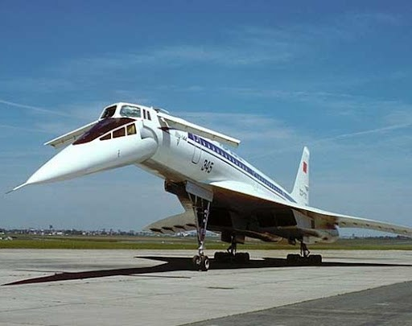
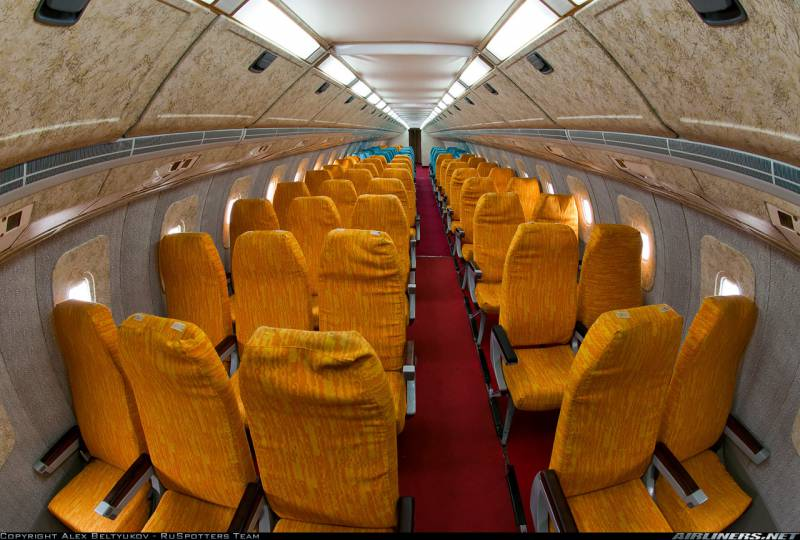

Ту-144 (по кодификации НАТО: Charger) — советский сверхзвуковой пассажирский самолёт 1-го класса, разработанный КБ «Туполев» в 1960-х годах, производившийся в Воронеже. Первый испытательный полёт совершил 31 декабря 1968 года, что стало первым в мире полётом сверхзвукового пассажирского самолёта (британско-французский «Конкорд» совершил первый испытательный полёт 2 марта 1969 года). 5 июня 1969 года впервые в истории сверхзвуковой пассажирской авиации преодолел звуковой барьер (первым был пикирующий на максимальной скорости с большой высоты дозвуковой DC-8). Коммерческая эксплуатация началась в 1975 году и продолжалась до 1978 года.
Практически все находящиеся в эксплуатации самолёты, в том числе возившие пассажиров, числились за КБ Туполева. Даже пассажирские перевозки выполнялись лётчиками-испытателями этого КБ.
В соответствии с требованиями РЛЭ, были запрещены полёты: ночью, в условиях обледенения, взлёт с мокрой ВПП. Самолёт имел назначенный ресурс по планеру — 500 часов налёта, а, например, срок службы планера лайнера Ту-134, спроектированного в то же время, ограничен 55 000 лётных часов, при 40 годах использования.
Первый рабочий рейс — 26 декабря 1975 года по маршруту Москва — Алма-Ата, самолёт перевёз почтовые отправления. Летом 1977 года Леонид Брежнев совершает государственный визит во Францию, где ему демонстрируют «Конкорд», который уже год как выполняет пассажирские рейсы в Бахрейн и Рио-де-Жанейро. Брежнев приказывает министру гражданской авиации СССР Б. Бугаеву начать подготовительные работы по выходу Ту-144, выполняющего пока только грузовые рейсы, на пассажирские трассы. Одновременно с этим ведутся работы по созданию модификации Ту-144Д (доработанный) со значительно увеличенной дальностью полёта, чтобы самолёт был способен соединить с Москвой дальние города без промежуточных посадок. Для этого Ту-144 должны оснастить новыми двигателями РД-36-51А, разработанными в ОКБ П. А. Колесова. Кузнецов Борис Фёдорович, командир Домодедовского экипажа № 1, совершил первый рейс № 499, на Ту-144, по маршруту Москва-Алма-Ата, 1 ноября 1977 г. Начало пассажирской эксплуатации Ту-144 было приурочено к 60-й годовщине Октябрьской революции. Регулярные рейсы выполняли только два самолёта — рег. № СССР-77109 и № СССР-77110. Билет на этот рейс стоил 83 рубля 70 копеек, тогда как обычный тариф между Алма-Атой и Москвой был равен 62 рублям. Этот рейс получил № 499 (из аэропорта Домодедово) и № 500 (из Алма-Аты), выполнялся раз в неделю по вторникам и являлся единственным из более чем десяти рейсов в Алма-Ату из Москвы, эксплуатацию которого осуществлял не Алма-Атинский авиаотряд Казахского управления гражданской авиации СССР, а Домодедовский отряд Московского авиаузла. Полёты на расстояние 3260 км на высоте 16—17 тыс. м со скоростью 2000 км/ч выполняли один раз в неделю, количество пассажиров на борту не превышало 80 человек. При разработке будущего сверхзвукового пассажирского лайнера на него возлагали большие надежды. Самолёт должен был преодолевать расстояния протяжённостью в 5—6 тысяч километров за несколько часов без промежуточных посадок. Самым продолжительным беспосадочным регулярным рейсом Ту-144 должен был стать маршрут Москва — Хабаровск протяжённостью 6250 км, однако из-за ряда техническим проблем это оказалось невозможным. Самый продолжительный рейс с посадкой — по маршруту Париж — Новосибирск — Токио общей протяжённостью 11 200 км; чуть короче маршрут Москва — Азорские острова — Гавана (10 400 км). Однако, кроме демонстраций на салоне в Ле-Бурже, Ту-144 не покидали пределы СССР и на международные воздушные трассы так и не вышли. Недолгая пассажирская эксплуатация данного самолёта ограничилась рейсами из Москвы в Алма-Ату, прежде всего, из-за использования двумя эксплуатируемыми самолётами двигателей НК-144А, значительно уменьшавшими дальность полёта с полной нагрузкой. Все рейсы на Ту-144 выполнялись только лётчиками-испытателями КБ Туполева в качестве КВС, пилоты «Аэрофлота» были только вторыми пилотами. Резерва топлива не было: если бы основной аэропорт в Алма-Ате не принимал, а единственный запасной в Ташкенте закрылся по метеоусловиям, то сажать лайнер было бы негде. Диспетчеры каждые 10—15 минут отслеживали, какие условия для приёма самолёта в обеих столицах советских республик. Коммерческая карьера Ту-144 была недолгой. До момента прекращения регулярной эксплуатации с пассажирами 23 мая 1978 года экипажи Аэрофлота на Ту-144 выполнили 55 рейсов, перевезя 3284 пассажира. 1 июня 1978 года, всего через семь месяцев после начала коммерческой эксплуатации, «Аэрофлот» прекратил сверхзвуковые пассажирские рейсы. Непосредственным поводом для прекращения пассажирских полётов послужила катастрофа опытного экземпляра Ту-144Д, произошедшая неделей ранее. Более основательной причиной отказа от пассажирской эксплуатации называется нерентабельность. Доходы от продажи билетов не покрывали даже незначительной части эксплуатационных расходов, вызванных высоким удельным расходом топлива в крейсерском режиме и очень сложным техническим обслуживанием этих самолётов. Значительное повышение стоимости билетов в СССР, где не было класса богатых людей (в отличие от западных потребителей «Конкорда»), не имело перспективы. Кроме того, малая дальность полёта первых модификаций (3—4 тыс. км), которую могли позволить двигатели НК-144А, и меньшая, чем у «Конкорда», дальность с новыми двигателями РД-36-51А (5 тыс. км) также ограничивали или усложняли и удорожали (при промежуточных посадках) возможности пассажирской эксплуатации как в стране, так и за её пределами на длинных межконтинентальных и трансконтинентальных маршрутах, где целевое сокращение времени полёта особенно ощутимо при сверхзвуковой скорости. Тем не менее, возможное возобновление эксплуатации «Аэрофлотом» Ту-144 планировалось. Вплоть до середины 1980-х годов в Воронеже продолжалось строительство новых экземпляров самолётов. Впоследствии Ту-144Д использовался только для некоторых срочных и специальных грузовых перевозок между Москвой и Хабаровском и др. В общей сложности Ту-144 совершил 102 рейса под флагом «Аэрофлота», из них 55 — пассажирских (было перевезено 3284 пассажира, для сравнения — «Конкорд» за время эксплуатации перевёз 2,5 млн пассажиров).

После смерти Брежнева отношение к самолёту у нового руководства страны изменилось. Предпочтение было отдано более простым и надёжным дозвуковым широкофюзеляжным Ил-86. В начале июля 1983 года вышло постановление правительства о прекращении работ по Ту-144. Постройка последних двух экземпляров с бортовыми номерами 77115 и 77116 была прекращена в Воронеже в 1984 году, причём последний никогда не летал и был разобран в середине 90-х годов. В последующие годы некоторые из оставшихся самолётов Ту-144 использовались для срочных грузовых и почтовых рейсов между Москвой и Хабаровском, тренировочных полётов лётчиков-испытателей ЛИИ по программе подготовки к полётам на многоразовом космическом корабле «Буран», а также для испытаний силовых агрегатов для перспективного стратегического бомбардировщика Ту-160.
В 1980-е годы самолёт с бортовым номером 77114 имел обозначение Ту-144Д и использовался для полётов в научных целях. На борту самолёта-лаборатории проводились радиологические исследования, в том числе по распространению радиации в целях оценки и устранения последствий Чернобыльской катастрофы. Прекратил полёты 27 февраля 1990 года, планер имел налёт 82 часа 40 минут, из них 28 часов на сверхзвуковых скоростях. В 1993 году Ту-144 б/н 77114 выставлялся на статической экспозиции авиасалона «МАКС», но после этого снова вернулся к полётам. В 1993 году был подписан договор о использовании научно-исследовательского потенциала этого самолёта в интересах НАСА и «Боинг», для чего была проведена значительная техническая модернизация самолёта. С 1996 по 1999 годы значительно модифицированный Ту-144Д (№ 77114) под названием Ту-144ЛЛ («Летающая лаборатория») использовался американским космическим агентством НАСА и авиакомпанией «Боинг» для исследований в области высокоскоростных коммерческих полётов с целью разработать план для создания нового современного сверхзвукового пассажирского самолёта. На Ту-144ЛЛ были установлены двигатели НК-32-1 (аналогичные используемым на Ту-160) в связи с отсутствием пригодных к эксплуатации НК-144 или РД-36-51, разнообразные датчики и испытательная контрольно-записывающая аппаратура. В полу 1-го салона была организована шахта аварийного покидания самолёта вниз, напрямую через грузовой люк. Пассажирские кресла на этот борт никогда не устанавливались, он был произведён уже после прекращения пассажирских полётов. Из-за более мощных двигателей хвост фюзеляжа был дополнительно к имеющимся обшит пластинами нержавеющей стали. После завершения полётов двигатели и записывающая аппаратура были демонтированы. Во время полётов в качестве модификации ЛЛ самолёт получил собственное имя «Москва». По окончании научной программы США хотели выкупить этот самолёт и вывезти его к себе, но договор не был подписан, в том числе потому, что на летающий образец Ту-144 были установлены такие же двигатели, которые использовались на военном Ту-160, являвшимся на тот момент сугубо секретным.
После прекращения пассажирских перевозок на Ту-144 представителями ОКБ Туполева предпринимались неоднократные попытки продолжения программы Ту-144 уже на военном поприще. Было проработано несколько проектов применения самолёта, но все они не вызывали заинтересованности у командования ВВС, которое прекрасно понимало всю сложность эксплуатации этого самолёта, да ещё и с сомнительными боевыми характеристиками. До практических испытаний дошёл только один проект — постановщик электронных помех на базе Ту-144, под который был оборудован борт с зав. № 06-1 с регистрационным номером СССР-77110. В случае удачных испытаний Ту-144ПП должен был поступить на вооружение авиации ВМФ, командование которой по разным причинам не смогло отказаться (в основном, из-за жёсткого давления руководства МАП) от неперспективной машины. Несмотря на проведённый с отрицательным результатом цикл испытаний самолёта на Северном флоте, финансирование проекта продолжалось, и на одном из аэродромов ВВС Тихоокеанского флота началось расширение аэродромной инфраструктуры и строительство капитального жилья. С распадом СССР строительство было заморожено, а проект окончательно похоронен.